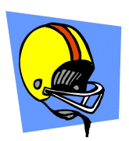
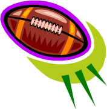
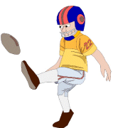
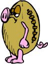

|  |
What's the Score? |
 |
�����Fred Flintstone and his buddy, Barney Rubble, are coaches in a football league for young kids during summer vacation. Fred's team is called Fred's Falcons and Barney's is called Barney's Bears. Rivalry is always intense between them as they are the best teams in the league. Whichever of these two teams wins the game against each other usually wins the league championship.
�����So the tension was high one Friday afternoon when the Falcons faced the Bears in a winner-take-all game. After the dust settled, the Falcons came out on top. But it was certainly a hard fought contest.
�����Lots of scoring plays were made. The Falcons scored in some manner 10 different times. This means TD's (touchdowns), PATs (aka point-after-touchdown or extra point), and FG's (field goals). (However, there were no "safeties" at all, by either team.)
�����Here are some additional facts for you to consider:
- the Falcons missed 2 PAT's;
- the Falcons' final score was an odd, composite number; and
- the Falcons outscored the Bears by 18 points.
�����Here are the two questions for you to answer:
- What was the number of points scored by the unhappy Bears?
- What is the fewest number of scoring plays that the Bears could have made to achieve their point total?
If you wish to send me your answers and proof of solution, you can email me at either of these two addresses:
trottermath@gmail.com
Perhaps you aren't sure about the value of the extra point in the story. Modern football has the 2-point option of running or passing the ball over the goal line. Just remember: this game was played in Bedrock times before the rules were changed. So a PAT is only worth 1 point.
Also, you may have wondered why the football is sometimes jokingly referred to as a "pigskin". Well, as a service to WTM readers, we present here a picture of the ball used in the game of this story. Now you know!